DX.5 — Symptômes vasomoteurs de la ménopause
Le rang 5 suit la liste canonique gelée du LOT_001. La fréquence de ce diagnostic parmi les personnes qui consultent pour une transpiration anormale n’est pas chiffrée pour la Suisse dans les sources consultées. Les bouffées de chaleur et les sueurs nocturnes de la transition ménopausique sont fréquentes et sans danger en elles-mêmes. Elles ne dispensent pas de chercher une cause grave quand le tableau est atypique, et les choix médicamenteux suivent les informations professionnelles suisses. Les HUG sont les Hôpitaux universitaires de Genève ; AIPS désigne le système suisse de publication des informations sur les médicaments. FI et IP désignent l’information professionnelle, et les CSV sont les listes structurées de médicaments de Swissmedic. ESE correspond à la Société européenne d’endocrinologie, SSGO à la Société suisse de gynécologie et obstétrique. NICE correspond à l’institut britannique d’évaluation des soins (National Institute for Health and Care Excellence). THM correspond au traitement hormonal de la ménopause, SVM les symptômes vasomoteurs et TCC la thérapie cognitive et comportementale. Les autres sigles sont développés au premier usage.
1. Définition
Les symptômes vasomoteurs de la ménopause associent notamment bouffées de chaleur et sueurs, diurnes ou nocturnes, dans le contexte d’une transition de la fonction ovarienne. La ménopause naturelle est définie rétrospectivement après douze mois sans règles, lorsque cette histoire est interprétable. Les symptômes peuvent commencer pendant la périménopause ; leur présence seule ne dispense pas de rechercher une autre cause si le tableau est atypique. [S5] [S6]
La brochure des HUG décrit la périménopause comme une période de 2 à 4 ans qui précède la ménopauseS6. Cette période se marque par des irrégularités du cycle et par des symptômes variables dont les bouffées de chaleurS6. Elle situe la ménopause à 51 ans en moyenne et la qualifie de précoce avant 40 ans ou de tardive après 55 ansS6. L’édition lue date de novembre 2019, avec une réimpression en octobre 2022 ; elle sert ici de description destinée aux patientes et non de référence terminologique. S6
2. Épidémiologie et histoire naturelle
La brochure HUG indique un âge moyen de la ménopause autour de 51 ansS4S6. L’avis suisse 90 rapporte des symptômes vasomoteurs durant en moyenne 7,4 ans ; cette moyenne n’est ni un pronostic individuel ni une durée obligatoire de traitementS4S6. Les sources consultées ne fournissent pas de prévalence suisse populationnelle actuelle des seules bouffées de chaleur.
Les populations et les périodes empêchent les raccourcis.Le résumé de la recommandation de l’ESE indique qu’environ 25 % des femmes post-ménopausées dans le monde présentent des symptômes de ménopause invalidantsS5. La publication en ligne a eu lieu le 1er septembre 2025 (PMID 41082911) et le résumé a été relu le 26 octobre 2026 sur Europe PMCS5. Ce chiffre est mondial, il n’est pas suisse et il ne sépare pas les bouffées des autres symptômes. Il ne remplace donc pas une prévalence suisse des bouffées de chaleur, qui reste une donnée non trouvée dans les sources consultées.
L’avis suisse retient deux énoncés au niveau de preuve IIaS4. Les SVM peuvent encore nécessiter un traitement chez les femmes de 60 ans et plus, et ils sont associés à un risque accru de maladies cardiovasculaires, d’ostéoporose et de troubles cognitifsS4. Le mot « associés » décrit une corrélation. L’avis ne conclut pas que les bouffées causent ces maladies et il précise que le THM n’est pas indiqué pour la prévention primaire ou secondaire des maladies cardiovasculaires.
Chaque valeur épidémiologique garde sa source, sa population et sa limite.3. Physiopathologie et cibles thérapeutiques
La baisse de l’action œstrogénique modifie la commande hypothalamique de thermorégulation et favorise les symptômes vasomoteurs. Les neurones associant kisspeptine, neurokinine B et dynorphine participent à ce circuit. Le traitement peut agir par substitution œstrogénique ou par antagonisme de récepteurs de neurokinines ; ces stratégies n’ont pas les mêmes indications ni les mêmes risques. [S7] [S9] [S10]
La courbe de perte d’eau pendant une bouffée montre la sudation objective de l’accès.
Le mécanisme relie le symptôme à une exploration puis à une cible.Les IP suisses décrivent chaque cible médicamenteuse avec des mesures pharmacologiques. L’IP de Lynkuet précise que le blocage des récepteurs NK1 et NK3 des neurones KNDy module l’activité neuronale impliquée dans la thermorégulation et dans la régulation du sommeil. L’IP de Veoza ne mentionne que la thermorégulation. Cette différence de mécanisme n’établit pas, à elle seule, une différence d’efficacité sur le sommeil entre les deux produits. [S9] [S10]
Le tableau rassemble, pour les quatre produits, la cible décrite par l’IP et la conséquence pratique.4. Démarche diagnostique et diagnostics différentiels
Un tableau typique autour de la transition ménopausique se reconnaît surtout cliniquement, particulièrement après 45 ansS5. Le médecin recherche néanmoins les signes d’une autre cause de sueurs ou d’aménorrhée et traite en priorité une urgence. Les examens sont ciblés par l’âge, la présentation, le traitement envisagé et les anomalies associées.
Les hypothèses concurrentes possèdent une question discriminante.Ce tableau est pédagogique : il ne chiffre aucune probabilité et ne remplace pas la lecture des chapitres cités. Si la personne se plaint de sueurs axillaires seules, sans bouffée ni trouble du cycle, le diagnostic DX.4 passe devant celui-ci. Son traitement topique Axhidrox® (autorisation 69243) possède sa propre IPS13. La rubrique Grossesse du texte lu le 26 octobre 2026 dit : « Si nécessaire, l’application d’Axhidrox peut être envisagée pendant la grossesse »S13. Le texte conditionne donc l’emploi à la nécessité et n’autorise pas un usage systématique. S13
5. Anamnèse ciblée et drapeaux rouges
L’entretien précise les cycles, l’âge, le caractère des épisodes, la fréquence, le sommeil, la gêne et les traitements. Il vérifie utérus, antécédents de thrombose, cancer, maladie hépatique et possibilité de grossesse avant tout choix. Les attentes, activités et préférences déterminent un objectif de soulagement réaliste. [S4] [S5] [S7]
Les questions relient mécanisme, sécurité et décision.L’IP Estradot liste les affections qui demandent une surveillance étroite si elles existent, ont existé ou se sont aggravées pendant une grossesse ou un traitement hormonal antérieur. Elle cite d’abord les facteurs de risque de tumeurs hormonodépendantes (par exemple un cancer du sein chez un parent au premier degré) et l’hyperplasie de l’endomètre comme antécédent. Elle cite aussi les modifications bénignes des seins, le léiomyome ou l’endométriose, les facteurs de risque de maladies thromboemboliques, la migraine, l’hypertension et le diabète sucré. Elle cite enfin les troubles du métabolisme des lipides, les affections hépatiques ou de la vésicule biliaire, l’ictère gestationnel, l’asthme, l’épilepsie, le lupus érythémateux disséminé et l’otosclérose. L’entretien recherche chacune de ces affections avant la première prescription. [S7]
Pour la thromboembolie veineuse (TEV), l’IP Estradot mentionne comme facteurs de risque une anamnèse personnelle ou familiale de maladie thromboembolique, le tabagisme et l’obésité (indice de masse corporelle supérieur à 30 kg/m²)S7. Elle mentionne aussi le lupus érythémateux disséminé, les affections malignes et l’âgeS7. Elle ajoute qu’un examen s’impose après des fausses couches spontanées répétées afin d’exclure une prédisposition thrombophile, dont la confirmation contre-indique le THM. Une immobilisation prolongée, une intervention lourde ou un traumatisme grave augmentent transitoirement le risque.
L’avis suisse recommande de calculer le risque cardiovasculaire individuel à 10 ans avec le calculateur SCORE2 de la Société européenne de cardiologieS4. Il demande aussi d’obtenir un avis cardiologique avant le THM lorsque ce risque est élevé ou très élevéS4. L’entretien recueille donc tabagisme, tension artérielle et cholestérol, qui alimentent ce calcul.
6. Examen physique ciblé
L’examen vérifie l’état général et les constantes et recherche les anomalies qui feraient discuter une autre cause. Avant un traitement hormonal, l’information professionnelle demande une évaluation clinique générale, mammaire et gynécologique adaptée. L’examen est réalisé avec explication, consentement et respect de l’intimité ; il ne transforme pas toute consultation en exploration invasive systématique. [S7] [S8] [S5]
L’observation et l’examen servent une question définie.Avant tout traitement hormonal de substitution (THS), l’IP Estradot exige « un examen clinique de l’état général de la patiente ainsi qu’un examen gynécologique approfondi ». Elle demande de répéter ces examens au moins une fois par an. Elle précise le contenu de ces examens. Ils comprennent un examen général, avec « la mesure de la tension artérielle et, le cas échéant, des analyses de laboratoire pertinentes ». Ils comprennent aussi un examen gynécologique, avec « examen mammaire et pelvien, y compris frottis cervical ». La brochure des HUG indique au contraire que le THM ne nécessite, du point de vue gynécologique, que les dépistages du col utérin et du sein recommandés à toutes les femmes. Le candidat connaît les deux libellés : l’IP fixe le minimum avant la prescription d’un produit donné, la brochure décrit la surveillance courante pour les patientes. [S7] [S6]
Le même texte recommande un examen des seins par le médecin avant le THM puis une fois par an, avec auto-examen mensuel par la femme. Une mammographie peut être indiquée selon l’âge et les facteurs de risque. Le médecin explique quelles modifications mammaires doivent être signalées sans attendre. [S7]
7. Signes fonctionnels, signes physiques et mécanismes
Le ressenti de chaleur, les réveils et la gêne sont des signes fonctionnels ; rougeur et sueur peuvent être constatées pendant l’épisode. Les symptômes ne possèdent pas tous le même mécanisme et certains troubles du sommeil ou de l’humeur peuvent être indépendants. Le médecin les définit séparément et recherche leur retentissement. [S5] [S6] [S9] [S10]
Le phénomène est décomposé avant d’être attribué à la ménopause.8. Diagnostic positif et critères selon l’âge
Après 45 ans, un tableau typique chez une personne autrement en bonne santé ne nécessite pas de dosage hormonal systématique selon l’ESE 2025S5. Avant 40 ans, irrégularités, sous-fertilité ou symptômes imposent de rechercher une insuffisance ovarienne ; entre 40 ans et moins de 45 ans, un bilan peut être considéréS5. L’aménorrhée doit être interprétée avec contraception, grossesse possible et antécédents chirurgicaux.
Le diagnostic clinique et les cas précoces restent distincts. Les recommandations britanniques de 2026 donnent des règles d’identification sans dosage hormonal à partir de 45 ans.Les recommandations lues ne fournissent aucune sensibilité ni spécificité des bouffées de chaleur, de la FSH ou de l’estradiol pour identifier la périménopause. Le NICE exclut les tests de laboratoire à partir de 45 ans devant un tableau typique et l’ESE déconseille le dosage systématique dans la même situationS12S5. Ces valeurs diagnostiques restent donc une donnée non trouvée dans les sources consultées ; le chapitre n’en invente aucune.
9. Examens complémentaires, prescription et interprétation
Les examens répondent à une question : statut ovarien précoce, diagnostic concurrent ou sécurité du médicament choisi. Si un dosage de FSH est indiqué, l’ESE propose les jours 2–5 du cycle ou après plus de 40 jours sans règles et l’interprétation avec l’estradiolS5S9. Le bilan hépatique préalable à Veoza est une exigence de traitement et non un test diagnostique des bouffées.
Le point 9.a, examen de référence, reste clinique : aucun dosage ni aucune imagerie ne sert d’étalon pour des bouffées typiquesS12. En effet, le NICE exclut les tests de laboratoire à partir de 45 ans devant un tableau typiqueS12. Le point 9.b, première intention, associe l’entretien sur les cycles, l’âge et le caractère des épisodes à un dosage de FSH et d’estradiol seulement si l’âge ou la clinique l’indiquentS5. Le point 9.c, alternatives, dépend de la question poséeS5. Un test de grossesse remplace la supposition chez une personne qui peut concevoir, et une imagerie ciblée n’est demandée qu’en cas de suspicion d’une autre maladieS5. En grossesse, avec un rein altéré ou avec un dispositif incompatible, le médecin choisit donc l’examen qui répond à cette question précise. Le point 9.d, seconde intention, comprend un bilan thyroïdien ou une prolactine selon l’hypothèse, un bilan hépatique avant Veoza et une exploration gynécologique devant un saignement inexpliquéS9S7.
La prescription relie moment, résultat et décision. Le tableau classe les examens selon la question posée, la règle de la source et le piège d’interprétation.Exemple fictif : une personne de 42 ans décrit des cycles espacés, des bouffées et des réveils nocturnes, sans signe généralS12S5. Le NICE permet de considérer une FSH entre 40 et 45 ans et l’ESE accepte un bilan dans cette trancheS12S5. Le médecin exclut d’abord une grossesse, vérifie qu’aucune contraception hormonale ne fausse la mesure et décide d’un second prélèvement si la valeur est élevéeS12S5. Le même raisonnement serait inutile chez une personne de 53 ans avec tableau typique. S12S5
10. Arbre décisionnel et orientation
Le médecin confirme le contexte, traite une urgence ou une cause secondaire si présente, puis évalue la gêne et les contre-indications. Il discute un THM individualisé ou une option non hormonale autorisée selon le terrain et les préférences. L’insuffisance ovarienne précoce, un antécédent oncologique ou une situation complexe justifie une expertise spécialisée. [S4] [S5] [S7] [S9] [S10]
L’embranchement conduit à un choix concret. Les sources suisses et britannique ordonnent les options de traitement avec des nuances qu’il faut connaître.La SSGO précise que la tibolone, stéroïde synthétique à action partielle œstrogénique, progestative et androgénique, est autorisée ; la dose relève de son information professionnelle suisse, non lue iciS4. Elle précise aussi que la progestérone micronisée orale est utilisable « off-label » contre les SVMS4. Elle ajoute que l’administration transdermique de progestérone ne protège pas l’endomètreS4. Elle indique aussi que la tibolone augmente significativement le risque de récidive d’un cancer du seinS4. Elle augmente aussi le risque d’accident vasculaire cérébral chez les femmes âgées de 68 ans en moyenne au début du traitementS4. Ces énoncés servent à comparer les options ; ils ne remplacent pas l’IP du produit prescrit.
Le NICE précise aussi qu’il faut proposer un THM combiné aux personnes qui ont un utérus et un THM œstrogénique seul aux personnes ayant subi une hystérectomie totale (1.8.1)S12. Il demande d’utiliser la dose efficace la plus faible (1.8.3)S12. Il demande aussi d’arrêter le THM systémique chez une personne chez qui un cancer du sein est diagnostiqué, en suivant la recommandation oncologique (1.8.8). S12
11. Traitement, surveillance, suivi et pronostic
Le traitement vise à réduire les symptômes et leur retentissement par une décision partagée. Le THM est discuté lorsqu’il est indiqué et sans contre-indication ; les options non hormonales comprennent des approches psychologiques et des antagonistes de neurokinines autorisés. La surveillance dépend du produit, avec une vigilance hépatique particulièrement explicite pour Veoza. [S4] [S5] [S7] [S9] [S10]
11.A Les objectifs répondent aux besoins de la personne.
La stratégie relie bénéfice, risque et préférence.L’avis suisse ordonne les doses d’œstrogènes en quatre niveaux selon l’objectif thérapeutique, en précisant que la bioéquivalence entre préparations n’a pas été étudiée. Le tableau suivant reprend ce repère de classification ; il ne remplace ni l’IP d’un produit ni le choix de la dose efficace la plus faible. [S4]
Le tableau classe les doses d’œstrogènes, mais l’IP du produit prescrit fixe la posologie.Les patchs Estradot® existent en cinq dosages de 25, 37,5, 50, 75 et 100 µg par 24 heures, avec des surfaces de libération respectives de 2,5, 3,75, 5, 7,5 et 10 cm²S7. La classification SSGO mentionne seulement 25, 50 et 100 µgS4S7. Les dosages de 37,5 et 75 µg se placent entre ces repères et suivent la règle d’adaptation de l’IP. S7
Les risques absolus de l’avis suisse se lisent par 1000 femmes sur 5 ans, avec des hormones qui ne sont plus disponibles en Suisse.Ces chiffres viennent de l’étude WHI avec des œstrogènes conjugués équins (CEE) et de l’acétate de médroxyprogestérone (AMP), deux hormones que l’avis dit ne plus être disponibles en Suisse pour le THM. Le risque de base du cancer du sein est de 14 femmes sur 1000 en 5 ans dans cette tranche d’âgeS4. L’association CEE + AMP le porte à 17 sur 1000, soit 3 cas de plusS4. L’avis note qu’il n’existe pas d’étude de l’ampleur de la WHI pour l’association œstradiol et progestérone micronisée orale. Le candidat ne doit donc pas transposer ces nombres tels quels à un patch d’estradiol.
11.B Chaque prescription conserve sa notice suisse.
Urgence — conduite chronologique Estradot est un œstrogène transdermique dont la dose est individualisée. Avec un utérus, la protection endométriale a un schéma propre. Veoza possède une dose fixe et une surveillance hépatique obligatoire. Lynkuet est une autre molécule avec une autre indication et d’autres interactions. Le tableau comparatif rassemble, pour les quatre produits, l’indication, la dose, la contre-indication principale et la surveillance.11.C La surveillance prévoit ce qui change la conduite.
| Le moment ou le paramètre est précisé. | Le médecin recherche le bénéfice et la tolérance. | L’anomalie conduit à une action. |
|---|---|---|
| Un THM symptomatique a été commencé. | L’ESE recommande une réévaluation de l’effet après trois mois ; dose, formulation, observance et diagnostic sont revus si réponse insuffisante. | Une mauvaise réponse ne conduit pas à multiplier automatiquement les traitements ou à ignorer un diagnostic concurrent. |
| Le THM se poursuit. | La SSGO demande une réévaluation annuelle ; les FI prévoient l’examen clinique adapté, tension et suivi mammaire/gynécologique. | Le rapport bénéfice-risque et les nouveaux antécédents peuvent imposer changement ou arrêt. |
| Une thrombose, une embolie ou un événement artériel est suspecté sous hormone. | Jambe douloureuse ou gonflée, douleur thoracique ou dyspnée sont pris au sérieux. | Les FI hormonales demandent arrêt immédiat et évaluation médicale ; la disparition d’une bouffée ne rassure pas sur ces symptômes. |
| Une migraine nouvelle inhabituelle, un trouble brutal visuel ou auditif, un ictère ou une hausse tensionnelle significative apparaît sous Estradot. | La clinique est évaluée sans attendre le contrôle annuel. | La FI prévoit l’arrêt immédiat et la recherche de cause. |
| Des saignements inexpliqués ou inhabituels surviennent. | Le calendrier et le schéma sont documentés avec l’examen indiqué. | L’exploration gynécologique exclut une cause organique avant de modifier seulement le rythme des hormones. |
| Veoza est utilisé. | Les contrôles hépatiques mensuels initiaux et les symptômes sont suivis avec un plan de contact. | Les seuils ou symptômes d’alerte décrits plus haut déclenchent arrêt et bilan. |
| Lynkuet ou Utrogestan altère vigilance, humeur ou équilibre. | Le médecin vérifie retentissement et activités à risque ; sous Lynkuet, un signe convulsif demande une évaluation urgente. | La prescription et la sécurité des activités sont réévaluées sans attribuer tout effet à la ménopause. |
Le NICE précise un point de surveillance utile pour le saignementS12. Un saignement vaginal est un effet fréquent pendant les 6 premiers mois d’un THM systémique ou dans les 3 mois qui suivent un changement de dose ou de préparationS12. La personne est interrogée à ce sujet lors du contrôle de 3 moisS12S7. Un saignement non programmé au-delà de ces délais impose de consulter rapidement. L’IP Estradot, de son côté, exige des méthodes diagnostiques adéquates, avec biopsie de l’endomètre si nécessaire, en cas d’hémorragies persistantes ou récurrentes, y compris un spotting.
La brochure des HUG ajoute que la décision de commencer un THM se prend avec le ou la gynécologue. Cette décision dépend de l’état de santé, de l’effet des symptômes sur la qualité de vie et des souhaits de la personne. Elle ajoute que la poursuite se rediscute chaque année. L’avis suisse précise que la voie transdermique est à privilégier au-delà de 60 à 65 ans et que l’âge ne justifie pas un arrêt systématique. S6S4
11.D Le pronostic est un contrôle évolutif, pas une guérison promise.
La poursuite ou l’arrêt résulte d’une réévaluation.Le NICE recommande d’offrir à la personne qui arrête un THM le choix entre une diminution progressive et un arrêt immédiat. Une diminution progressive peut limiter la récidive des symptômes à court terme, alors que les deux modes ne diffèrent pas à plus long terme (recommandations 1.8.6 et 1.8.7)S12. Le NICE conseille aussi d’expliquer que les symptômes peuvent revenir à l’arrêt et d’envisager un nouveau traitement si nécessaire (1.4.3). S12
Pour l’IOP, le NICE demande de poursuivre le traitement hormonal au moins jusqu’à l’âge naturel de la ménopause, sauf contre-indication, et rappelle que le THM n’est pas un contraceptif (1.7.7)S12S4. L’avis suisse recommande un THM au moins jusqu’à l’âge moyen de la ménopause, environ 52 ans, en l’absence de contre-indication, et juge le THM une indication absolue en cas d’IOP. S12S4
12. Prévention primaire, secondaire et tertiaire
Les sources retenues ne fournissent aucune prévention primaire validée de toutes les bouffées naturelles. La prévention secondaire détecte les formes précoces, les causes concurrentes et les contre-indications avant prescription. La prévention tertiaire réduit le retentissement et les complications, sans utiliser le THM pour la seule prévention cardiovasculaire. [S4] [S5]
La prévention se rattache à un risque concret.La brochure des HUG range parmi les actions qui aident à mieux vivre la ménopause l’arrêt du tabac, la limitation de l’alcool, une activité physique régulière et une alimentation équilibrée. Le NICE recommande de donner des conseils sur la santé osseuse et d’expliquer l’importance de maintenir la masse et la force musculaires par l’activité physique (recommandations 1.2.4 et 1.2.5)S6S12. Ces mesures relèvent de la santé générale ; les sources lues ne les présentent pas comme une prévention démontrée des bouffées.
Les approches complémentaires et les préparations non autorisées demandent une information sur leurs limites.La contraception reste une question distincte. L’IP Utrogestan indique que le produit n’a pas d’effet contraceptifS8. Le NICE rappelle que le THM n’est pas un contraceptif (1.7.7) et recommande de donner une information sur la contraception aux personnes qui ont des symptômes de ménopause (1.2.3)S12. L’IP Lynkuet impose une contraception fiable, non hormonale de préférence, pendant le traitement et pendant les deux semaines qui suiventS8S12S10S6. Les dépistages du col utérin et du sein recommandés pour l’âge continuent de s’appliquer, selon la brochure des HUG.
13. Points clés verbaux
Le médecin reconnaît le contexte clinique et recherche une autre cause si le tableau est atypique. Il évite les dosages hormonaux systématiques après 45 ans et investigue les présentations précocesS4S5. Il choisit avec la personne un traitement autorisé, vérifie l’utérus et les contre-indications et organise la surveillance propre au produit. Il réévalue bénéfice, risques et activités sans annoncer de guérison définitive. [S7] [S8] [S9] [S10]
14. Pièges et questions de l’examen fédéral
L’examen distingue une transition clinique habituelle d’une présentation précoce ou d’un diagnostic concurrent. Les prescriptions dépendent de la spécialité suisse et le traitement non hormonal peut demander une surveillance importante. Les critères biologiques de diagnostic, de non-introduction et d’arrêt ne sont pas mélangés. [S4] [S5] [S7] [S8] [S9] [S10]
| Le candidat répond à une question. | La réponse est motivée. | Le piège est évité. |
|---|---|---|
| Une FSH doit-elle être dosée chez toute personne de 52 ans avec tableau typique S4S5? | L’ESE ne demande pas de dosage hormonal systématique dans ce contexte après 45 ansS5. | Le candidat réserve les examens aux indications cliniques et thérapeutiques. |
| Une FSH normale exclut-elle une périménopause ? | La FSH peut fluctuer ; l’histoire, le moment du dosage et l’âge conditionnent l’interprétation. | Il n’utilise pas un résultat isolé comme exclusion universelle. |
| Une aménorrhée sous contraception prouve-t-elle une ménopause naturelle ? | L’histoire peut être masquée ; la possibilité de grossesse et le traitement sont vérifiés. | Il n’applique pas mécaniquement douze mois sans saignement. |
| Un œstrogène systémique seul convient-il avec utérus ? | Une protection progestative appropriée est nécessaire. | Il n’oublie pas l’endomètre en se concentrant uniquement sur les bouffées. |
| Estradot 50 est-il le départ AIPS obligatoire de tous les symptômes vasomoteurs S4S5S7S8S9S10? | Le départ numérique 50 est donné pour la prévention de l’ostéoporose ; les symptômes commencent à la dose efficace minimale individualiséeS4S5S7S8S9S10. | Il ne transfère pas une dose d’une indication à l’autre. |
| Utrogestan vaginal est-il la voie AIPS ménopausique de protection endométriale ? | La FI ménopause décrit la voie orale de 12 à 14 jours ; la voie vaginale de la FI vise la fertilité, et la SSGO range la progestérone micronisée orale ou vaginale parmi les options « off-label »S4S5S7S8S9S10. | Il distingue les indications de fertilité et de ménopause. |
| Veoza peut-il être associé à un inhibiteur faible du CYP1A2 ? | La FI suisse contre-indique les inhibiteurs de cette enzyme, même faibles. | Il ne limite pas l’interdiction aux puissants. |
| Faut-il attendre bilirubine à deux fois la LSN pour ne pas commencer Veoza ? | La règle suisse initiale interdit de commencer si bilirubine totale élevée ; elle est distincte de la combinaison d’arrêt. | Il ne mélange pas seuil initial et seuil d’arrêt sous traitement. |
| Le calendrier hépatique de Veoza est-il automatiquement celui de Lynkuet ? | Les FI sont distinctes ; le calendrier mensuel des trois premiers mois est explicite pour Veoza. | Il ne transpose ni dose ni surveillance sans preuve. |
| Lynkuet possède-t-il une indication pour des symptômes sous traitement endocrinien adjuvant du sein ? | La FI suisse de juin 2026 comporte cette indication adulte ; elle doit être coordonnée avec le traitement oncologiqueS4S5S7S8S9S10. | Il n’étend pas automatiquement cette indication à Veoza. |
| Le THM est-il un contraceptif ou un traitement de prévention cardiovasculaire seul ? | Il ne remplit pas ces rôles ; la contraception et les facteurs de risque sont discutés séparément. | Il ne confond pas soulagement, réserve ovarienne et prévention d’une autre maladie. |
Sources
- [S1] Swissmedic — listes officielles des médicaments et emballages autorisés. Le document est daté de l’état au 30.09.2026 ; la consultation date du 23 octobre 2026.
- [S2] Fedlex — loi fédérale sur l’assurance-maladie. Le document est daté de l’état au 1er juillet 2026 ; articles 25 alinéa 1 et 32 alinéas 1–4 ; la consultation date du 23 octobre 2026.
- [S3] Fedlex — loi fédérale sur l’assurance-invalidité. Le document est daté de l’état au 1er janvier 2026 ; articles 7 alinéas 1–2, 8 alinéa 1 et 28 alinéas 1 et 1 bis ; la consultation date du 23 octobre 2026.
- [S4] Société suisse de gynécologie et obstétrique — Avis d’experts 90, recommandations actuelles sur le traitement hormonal systémique de la ménopause. Le document est daté du 2 janvier 2025 ; version française corrigée le 12 janvier 2026 ; remplace l’avis 42 ; texte intégral lu le 26 octobre 2026 ; la consultation date du 23 octobre 2026.
- [S5] European Society of Endocrinology — Clinical practice guideline for evaluation and management of menopause and the perimenopause. Le document est daté de 2025 (publication en ligne le 1er septembre 2025, PMID 41082911) ; recommandations R1.1–1.9, tableaux 3 et 6 relus sur outil web ; copie locale partielle ; résumé relu sur Europe PMC le 26 octobre 2026 ; la consultation date du 23 octobre 2026.
- [S6] Hôpitaux universitaires de Genève — Le traitement hormonal de la ménopause (brochure D-FEA). Le document est daté de novembre 2019, réimpression d’octobre 2022 ; information descriptive destinée aux patientes ; texte intégral lu le 26 octobre 2026.
- [S7] Swissmedic/Refdata — AIPS Estradot ; autorisation 55976. Le document est daté de mars 2026 ; texte relu le 26 octobre 2026 par extraction ciblée.
- [S8] Swissmedic/Refdata — AIPS Utrogestan ; autorisation 45351. Le document est daté d’août 2025 ; texte relu le 26 octobre 2026 par extraction ciblée.
- [S9] Swissmedic/Refdata — AIPS Veoza ; autorisation 69232. Le document est daté de mars 2025 ; texte relu le 26 octobre 2026 par extraction ciblée.
- [S10] Swissmedic/Refdata — AIPS Lynkuet ; autorisation 69917. Le document est daté de juin 2026 ; texte relu le 26 octobre 2026 par extraction ciblée.
- [S11] Swissmedic / Astellas — Veoza, résumé public de gestion des risques. Le document est daté de la version suisse 2.0 du 22 juin 2026 ; base européenne 4.2 d’août 2025 ; texte anglais lu le 26 octobre 2026.
- [S12] National Institute for Health and Care Excellence — Menopause: identification and management (NG23). Le document est daté de la publication du 12 novembre 2015, dernière mise à jour du 15 avril 2026 ; recommandations 1.2 à 1.9 lues le 26 octobre 2026 ; texte anglais.
- [S13] Swissmedic/Refdata — AIPS Axhidrox crème ; autorisation 69243. Le document est daté de février 2024 ; rubrique Grossesse, allaitement ; texte relu le 26 octobre 2026 par extraction ciblée.
Les approches complémentaires et les préparations non autorisées demandent une information sur leurs limites.
| L’approche est nommée. | La source est citée. | La limite est conservée. |
|---|---|---|
| Isoflavones et actée à grappes noires. | Le NICE indique qu’il existe quelques données selon lesquelles ces produits peuvent soulager les SVM (1.4.7)S6S12. | Les préparations sont multiples et de sécurité incertaine, varient entre elles, et des interactions médicamenteuses ont été rapportées. |
| Millepertuis. | Le NICE signale qu’il existe quelques données de soulagement des SVM, mais une incertitude sur la dose, la persistance de l’effet et la nature des préparations (1.4.8)S6S12. | Chez une personne avec antécédent ou risque élevé de cancer du sein, les interactions sérieuses concernent notamment le tamoxifène, les anticoagulants et les antiépileptiques ; l’IP Estradot classe le millepertuis parmi les inducteurs enzymatiques. |
| Hormones non réglementées ou préparations magistrales. | Le NICE explique que l’efficacité et la sécurité des préparations hormonales non réglementées sont inconnues (1.4.5)S6S12. La SSGO cite la prégnénolone et la DHEA orales ainsi que la testostérone transdermique comme non autorisées par Swissmedic. | La SSGO indique qu’elles peuvent être prescrites sous forme de préparations magistrales, que les études sont insuffisantes et que la patiente doit en être informée. |
| Plantes, traitements non hormonaux et acupuncture. | La brochure des HUG écrit que ces approches peuvent se montrer efficaces contre les bouffées. | La même brochure rappelle que certains de ces traitements n’ont pas fait l’objet d’études scientifiques. |
La prévention se rattache à un risque concret.
| Le niveau ou le risque est précisé. | L’action est concrète. | La limite est conservée. |
|---|---|---|
| La prévention primaire d’une bouffée naturelle est discutée. | L’information explique la transition et les moyens de confort choisis sans promettre d’empêcher tous les épisodes. | Une mesure de mode de vie n’est pas présentée comme preuve de prévention universelle. |
| Une insuffisance ovarienne avant 40 ans est possibleS4S5. | L’équipe organise diagnostic et suivi spécialisés avec santé osseuse, cardiovasculaire, fertilité et psychisme. | Le suivi dépasse la seule disparition des sueurs. |
| Une maladie secondaire pourrait être manquée. | Le médecin recherche symptômes généraux, médicaments et évolution atypique. | L’âge compatible ne dispense pas de réévaluation. |
| Une toxicité médicamenteuse est évitable. | Il vérifie interactions, contre-indications, utérus, protection endométriale, rein, foie et accès aux contrôles. | Une option non hormonale n’est pas automatiquement sans risque. |
| Le retentissement psychosocial et professionnel est présent. | Les objectifs, adaptations et soutiens sont discutés et revus. | La gêne est reconnue sans lui attribuer une cause psychiatrique unique. |
L’activité physique, l’arrêt du tabac, l’alimentation et la prise en charge des facteurs cardiovasculaires conservent leur intérêt de santé générale. Les bouffées ne justifient pas d’introduire des hormones comme prévention primaire ou secondaire d’une maladie cardiovasculaire. Le médecin distingue un éventuel bénéfice osseux dans une indication autorisée du traitement symptomatique discuté ici. [S4] [S5]
Le dépistage mammaire et le suivi gynécologique restent adaptés aux recommandations nationales, à l’âge et aux risques ; ils ne sont pas remplacés par le choix d’un produit dit bio-identique. Les hormones de structure identique aux hormones humaines peuvent être des médicaments autorisés, mais ce qualificatif ne garantit pas l’absence de risque et ne valide pas toute préparation magistrale. [S4] [S7]
La poursuite ou l’arrêt résulte d’une réévaluation.
Les symptômes peuvent diminuer avec le temps ou réapparaître à l’arrêt ; une moyenne de durée ne décide pas à la place de la personne. L’objectif reste un bénéfice utile supérieur aux risques. L’avis suisse refuse une limite arbitraire de durée mais demande une revue annuelle ; les notices conservent leur demande de dose minimale et de réévaluation. [S4] [S7]
La baisse des symptômes sous antagoniste de neurokinines ne restaure pas la réserve ovarienne, et le THM ne constitue pas une contraception. L’insuffisance ovarienne prématurée exige un suivi distinct des risques osseux, cardiovasculaires, de fertilité et de santé psychique. Le mot guérison n’est donc pas appliqué indistinctement au soulagement d’une bouffée et à la fonction ovarienne. [S5] [S8] [S9] [S10]
L’état des recherches inclut des antagonistes de neurokinines autorisés en Suisse, dont Lynkuet avec indication liée au traitement endocrinien adjuvant du cancer du sein dans sa FI de juin 2026S9S10S11. Leur recul au-delà de douze mois reste limité dans les textes et la pharmacovigilance demeure nécessaire ; Veoza possède un risque hépatique identifié dans le résumé suisse 2026S9S10S11. Cette actualité ne garantit pas une supériorité comparative ni une sécurité à long terme.
La capacité de travail et les adaptations sont décrites selon sommeil, gêne et effets du traitement ; aucune durée uniforme d’arrêt n’est attribuée à la ménopause. Les prestations suivent notamment la LAMal, article 25 alinéa 1 et article 32 alinéas 1–4, état au 1er juillet 2026S2. Elles suivent aussi la LAI, articles 7 alinéas 1–2, 8 alinéa 1 et 28 alinéas 1 et 1 bis, état au 1er janvier 2026S2S3. Le diagnostic ou l’autorisation d’un produit ne garantit ni remboursement de tout choix ni rente.
L’organisation rend le traitement applicable.
La personne dispose d’une prescription compréhensible, sait quelle voie et quel calendrier utiliser et connaît les symptômes qui demandent un appel immédiat. Les contrôles hépatiques et les rendez-vous sont organisés avant une prescription qui les exige. L’équipe vérifie l’accès aux analyses, aux relais et au produit choisi. [S7] [S8] [S9] [S10]
Une bouffée typique stable ne nécessite pas une hospitalisation pour être traitée ; une urgence ou une complication suit ses propres critères. Les sources ne fournissent aucun délai universel d’observation ni critère suisse de sortie hospitalière propre à toutes les bouffées. Le cours ne fabrique pas une durée de séjour pour une prise en charge principalement ambulatoire. [S5]
Au travail, fatigue, sommeil fragmenté, vertiges ou somnolence demandent une adaptation aux tâches et un suivi du résultat. Une dose prise le soir ne garantit pas à elle seule l’absence de gêne le lendemain. La conduite est évaluée sur la tolérance réelle et le libellé de la FI, particulièrement après introduction d’un produit sédatif. [S8] [S10]
Le tableau comparatif rassemble, pour les quatre produits, l’indication, la dose, la contre-indication principale et la surveillance.
| Le produit est nommé. | L’indication et la dose sont citées. | Les contre-indications majeures sont citées. | La surveillance est décrite. |
|---|---|---|---|
| Estradot® (autorisation 55976) | Symptômes dus à la ménopause naturelle ou chirurgicale ; dose efficace minimale, patch renouvelé tous les 3–4 jours ; toujours un progestatif si l’utérus est présentS7. | Cancer du sein actuel ou antérieur, néoplasie hormonodépendante, saignement non exploré, maladie grave du foie, thromboembolie, porphyrie, grossesse, allaitement. | Examen général et gynécologique annuel ; réévaluation du bénéfice et du risque ; arrêt immédiat selon la liste de l’IP. |
| Utrogestan® (autorisation 45351) | En complément d’un œstrogène chez la femme non hystérectomisée : en général 200 mg le soir pendant 12 à 14 jours du cycle ; au plus 200 mg par priseS8. | Tumeur du sein ou génitale, maladie ou tumeur du foie, thromboembolie, hémorragie cérébrale, saignement génital inexpliqué, porphyrie. | Examen gynécologique annuel conseillé ; glycémie chez la femme diabétique ; exclure la grossesse avant la voie orale. |
| Veoza® (autorisation 69232) | 45 mg une fois par jour, à la même heure, pour des SVM modérés à sévères postménopausiquesS9. | Child-Pugh B ou C, DFGe inférieur à 30, inhibiteurs du CYP1A2, hypersensibilitéS9. | ALAT, ASAT, PAL et bilirubine avant le début, puis chaque mois pendant 3 mois ; arrêt si transaminases supérieures à 5 fois la limite ou à 3 fois avec bilirubine supérieure à 2 foisS9. |
| Lynkuet® (autorisation 69917) | 120 mg (deux capsules de 60 mg) une fois par jour avant le coucher ; SVM postménopausiques ou liés à un traitement endocrinien adjuvant du cancer du seinS10. | Child-Pugh C, inhibiteurs puissants du CYP3A4, grossesse avérée ou présumée, hypersensibilité. | Information sur les convulsions et les effets sur le système nerveux central ; surveillance hépatique rapprochée si Child-Pugh B. |
Lynkuet est une autre molécule avec une autre indication et d’autres interactions.
Lynkuet® (élinzanétant, n° 69917) antagonise les récepteurs NK1 et NK3 et traite les SVM postménopausiques ou liés à un traitement endocrinien adjuvant du cancer du seinS10. L’AIPS prévoit 120 mg (deux capsules de 60 mg) une fois par jour au coucherS10. Avec un inhibiteur modéré du CYP3A4, la dose diminue à 60 mgS10.
Les inhibiteurs puissants du CYP3A4 (l’itraconazole multiplie l’exposition par 6,32), une insuffisance hépatique Child-Pugh C, la grossesse et l’hypersensibilité le contre-indiquentS10. Les inducteurs comme la carbamazépine réduisent l’exposition, mais la FI déconseille d’augmenter la dose ; le tamoxifène et l’anastrozole restent compatiblesS10.
Une contraception non hormonale fiable s’impose pendant le traitement et deux semaines après, l’allaitement est déconseillé, et un antécédent de convulsion exige une évaluation individuelleS10. Un débit de filtration de 30–89 mL/min/1,73 m² ne demande pas d’adaptation, mais l’usage sous 30 est non recommandéS10. Au-delà de 65 ans, sécurité et efficacité ne sont pas établies ; avant 18 ans, le produit n’est pas indiquéS10. Dans OASIS 1 et 2, les SVM quotidiens diminuent de 9,2 contre 6,0 sous placebo, et de 7,5 contre 4,2 dans OASIS 4 chez des patientes sous traitement endocrinienS10. Fatigue, somnolence, céphalées et humeur dépressive doivent être annoncées, et la demi-vie d’environ 45 heures explique le délai de retour à 120 mgS10.
Veoza possède une dose fixe et une surveillance hépatique obligatoire.
Veoza® (fézolinétant, n° 69232) est un antagoniste non hormonal du récepteur NK3 qui traite les SVM modérés à sévères postménopausiquesS9. L’AIPS prévoit 45 mg par voie orale une fois par jour, dose qui est aussi le maximumS9. Le bénéfice se réexamine après la première année, car la FI ne contient pas de données au-delà de douze mois.
Tous les inhibiteurs du CYP1A2, même faibles, une insuffisance hépatique Child-Pugh B ou C et un DFGe < 30 mL/min/1,73 m² le contre-indiquentS9. La FI le déconseille en Child-Pugh A, pendant l’allaitement et avec un THM systémique, et elle ne l’indique ni pendant la grossesse ni chez l’enfantS9.
| Moment ou résultat | Conduite |
|---|---|
| Avant la première dose | ALAT, ASAT, phosphatase alcaline et bilirubine sont dosées ; le traitement ne débute pas si ALAT ou ASAT dépasse 2 fois la limite ou si la bilirubine est élevéeS9. |
| Trois premiers mois | Le bilan hépatique se contrôle chaque moisS9. |
| Fatigue, nausées, prurit, ictère, urines foncées | Le fézolinétant s’arrête immédiatement et le bilan s’imposeS9. |
| Transaminases > 5 fois la limite, ou > 3 fois avec bilirubine > 2 fois | Le traitement s’arrête et les contrôles se poursuivent jusqu’à normalisationS9. |
Dans SKYLIGHT 1 et 2, 45 mg réduisent les SVM quotidiens de 6,9 contre 4,4 sous placebo, dès la première semaineS9. Les transaminases dépassent 3 fois la limite chez 2,3 % des patientes traitées (2,7 cas pour 100 années-femmes)S9. Le placebo donne 0,9 % (1,5 cas pour 100 années-femmes), et l’élévation survient surtout pendant les trois premiers moisS9. Après autorisation, des cas graves avec transaminases au-dessus de 10 fois la limite supérieure de la normale et élévation de la bilirubine ou de la phosphatase alcaline ont été rapportésS9. Le résumé public de gestion des risques du 22 juin 2026 retient la lésion hépatique médicamenteuse comme risque important identifiéS11.
Avec un utérus, la protection endométriale a un schéma propre.
Utrogestan® (progestérone micronisée, n° 45351) est associé à un œstrogène chez la femme non hystérectomiséeS8. L’AIPS prévoit 200 mg le soir au coucher pendant 12 à 14 jours du cycle, sans dépasser 200 mg par priseS8. La prise du soir limite somnolence et vertiges, et la progestérone n’a pas d’effet contraceptifS8.
Une tumeur du sein ou génitale, une maladie du foie, une thromboembolie, une hémorragie cérébrale, un saignement génital inexpliqué et la porphyrie la contre-indiquentS8. La grossesse s’exclut avant la voie orale et l’allaitement l’exclutS8. Les inducteurs du CYP3A4 réduisent son exposition, et la glycémie se surveille chez la diabétiqueS8.
Estradot est un œstrogène transdermique dont la dose est individualisée.
Estradot® (estradiol transdermique, n° 55976) traite les symptômes de la ménopause naturelle ou chirurgicale avec des patchs de 25 à 100 µg/24 hS7. Le patch se renouvelle tous les 3–4 jours, à la dose efficace minimale, et l’utérus présent impose toujours un progestatifS7. La patiente doit appliquer le patch sur l’abdomen, jamais sur les seins, en alternant les sitesS7.
Le cancer du sein actuel ou antérieur, une néoplasie hormonodépendante, un saignement non exploré, une maladie hépatique grave, une thromboembolie veineuse ou artérielle, une porphyrie, la grossesse et l’allaitement le contre-indiquentS7. Les inducteurs enzymatiques (rifampicine, carbamazépine, millepertuis) réduisent son effet, et il diminue le taux de lamotrigineS7.
| Événement | Chiffre de l’IP |
|---|---|
| Cancer du sein | La WHI rapporte un RR de 1,24 avec œstrogène et progestatif, et de 0,77 avec œstrogène seulS7. |
| Thromboembolie veineuse | Le risque est 2 à 3 fois supérieur, surtout les premières annéesS7. Embolie pulmonaire : RR 2,13 (1,39–3,25), soit 8 cas de plus pour 10 000 années-patientes (15 contre 7). Sans THS, environ 3 thromboses veineuses profondes pour 1000 femmes sur 5 ans à 50–59 ans et environ 8 à 60–69 ans ; avec THS pendant 5 ans, environ 2 à 6 cas de plus à 50–59 ans et 5 à 15 cas de plus à 60–69 ansS7S8. |
| Accident vasculaire cérébral | La WHI rapporte un RR de 1,31 avec l’associationS7. |
| Démence (65–79 ans) | La WHIMS rapporte un RR de 2,05 avec l’associationS7. |
| Cancer de l’endomètre | Il augmente sous œstrogène seul, et un progestatif d’au moins 12 jours par cycle le prévientS7. |
Une thrombose, une migraine nouvelle, une perte visuelle, une hypertension, un ictère ou une grossesse imposent l’arrêt immédiat, et une chirurgie élective fait envisager une interruption 4 à 6 semaines avantS7.
Urgence — conduite chronologique
- D’abord, le médecin écarte une urgence devant un tableau atypique ou un signe général, notamment un syndrome coronarien aigu ou une hypoglycémie. Leurs conduites figurent dans leurs chapitres et priment sur la prescription symptomatique.
- Ensuite, le médecin interrompt l’hormone devant une suspicion de thrombose, d’embolie ou d’événement artérielS7. Il l’interrompt aussi devant une migraine nouvelle inhabituelle, un trouble brutal visuel ou auditif, un ictère ou une hausse tensionnelle significative, selon l’IP EstradotS7.
- Puis, si une grossesse est soupçonnée ou avérée sous Estradot, la personne interrompt immédiatement le médicament et consulte un médecinS7.
- Sous Veoza, le médecin demande un bilan hépatique à la moindre alerte : fatigue récente, perte d’appétit, nausées, vomissements, prurit, ictère, selles pâles, urines foncées ou douleurs abdominalesS9. Il arrête le fézolinétant si les transaminases dépassent 5 fois la limite supérieure de la normale, ou 3 fois avec une bilirubine totale supérieure à 2 fois cette limiteS9.
- Enfin, devant un saignement inexpliqué ou persistant, le médecin organise l’exploration gynécologique, avec biopsie de l’endomètre si nécessaireS7.
Les risques absolus de l’avis suisse se lisent par 1000 femmes sur 5 ans, avec des hormones qui ne sont plus disponibles en Suisse.
| L’événement est nommé. | L’association œstroprogestative orale (CEE + AMP) est chiffrée. | L’œstrogène seul (CEE) est chiffré. |
|---|---|---|
| Maladie coronarienne | + 2,5 cas | − 5,5 cas |
| Cancer du sein invasif | + 3 cas | − 2,5 cas |
| Accident vasculaire cérébral | + 2,5 cas | − 0,5 cas |
| Embolie pulmonaire | + 3 cas | + 1,5 cas |
| Cancer colorectal | − 0,5 cas | − 0,5 cas |
| Fracture de la hanche | − 1,5 cas | − 1,5 cas |
| Mortalité totale | − 5 cas | − 5,5 cas |
Le tableau classe les doses d’œstrogènes, mais l’IP du produit prescrit fixe la posologie.
| La préparation est nommée. | La dose élevée est citée. | La dose modérée ou standard est citée. | La dose faible est citée. | La dose ultra-faible est citée. |
|---|---|---|---|---|
| 17-bêta-estradiol micronisé oral | 4 mg | 2 mg | 1 mg | 0,5 mg |
| Valérate d’estradiol oral | 4 mg | 2 mg | 1 mg | 0,5 mg |
| 17-bêta-estradiol transdermique, patch | 100 µg | 50 µg | 25 µg | non indiquée dans le tableau |
| 17-bêta-estradiol transdermique, gel | 2–3 mg | 1–1,5 mg | 0,5–0,75 mg | < 0,5 mgS4 |
La stratégie relie bénéfice, risque et préférence.
Le médecin convient d’un objectif mesurable pour la personne : moins de réveils, une activité possible, une gêne moins forte ou un sommeil amélioré. Il documente un état initial et explique que fréquence et retentissement sont deux dimensions distinctes. L’absence de disparition totale ne signifie pas forcément échec si le bénéfice est utile et la tolérance acceptable. [S4] [S5]
Les essais de l’IP donnent un but chiffré réalisteS9. Sous fézolinétant, le nombre quotidien de SVM modérés à sévères a diminué de 6,4 sous 30 mg et de 6,9 sous 45 mg, contre 4,4 sous placeboS9. Sous élinzanétant, il a diminué de 9,2 contre 6,0 sous placeboS10. Ces valeurs décrivent des moyennes d’essai et ne garantissent pas le résultat individuel, car le médecin convient d’abord avec la personne d’un objectif mesurable.
La SSGO recommande un THM individualisé de premier choix du syndrome climatérique sans contre-indication, avec information détaillée et réévaluation annuelle. La FI Estradot demande la plus faible dose efficace et une durée aussi courte que possible tant que le bénéfice dépasse le risque. Ces formulations sont conservées ensemble : ni arrêt arbitraire à 60 ou 65 ans, ni prescription indéfinie sans réévaluation. S4S7
Les symptômes urogénitaux relèvent d’une autre question que le traitement systémique des bouffées. Un œstrogène vaginal local ne devient pas automatiquement un traitement des symptômes vasomoteurs ; sa prescription et son risque se discutent dans son indication. Le chapitre ne propose pas d’additionner des voies ou des hormones dites bio-identiques sans preuve de formulation et de sécurité. [S4] [S5]
La thérapie cognitive et comportementale, abrégée TCC, réduit surtout la détresse et l’interférence des bouffées dans la synthèse ESE, sans réduction de fréquence démontrée dans ce tableau. Les mesures de confort et l’activité physique sont discutées selon les préférences et la santé générale ; elles ne sont pas promises comme une suppression certaine des épisodes. Les produits à base de plantes peuvent interagir et leur qualité de preuve n’est pas uniforme. [S5]
Les sources suisses et britannique ordonnent les options de traitement avec des nuances qu’il faut connaître.
| La source est nommée. | L’ordre ou la règle est cité. | La nuance est signalée. |
|---|---|---|
| Avis SSGO n° 90 (2025)S4S5 | Le THM est le traitement de premier choix du syndrome climatérique en l’absence de contre-indication ; tout THM répond à une indication, est personnalisé et réévalué chaque année. Pour les approches non hormonales, l’avis renvoie à son avis n° 51, non lu pour ce chapitre. | L’avis ne limite pas arbitrairement la durée et fixe la fenêtre d’intervention thérapeutique à moins de 60 ans ou à 10 ans de la ménopauseS4S5. |
| NICE NG23 (état du 15 avril 2026)S4S5 | Proposer un THM aux personnes qui ont des SVM (1.5.1) ; envisager une TCC spécifique de la ménopause en complément, en cas de contre-indication ou de préférence (1.5.2) ; le fézolinétant est recommandé comme option lorsque le THM ne convient pas (1.5.3, renvoi à l’évaluation TA1143 de 2026)S4S5. | Ne pas proposer en routine un inhibiteur sélectif de la recapture de la sérotonine, un inhibiteur de la recapture de la sérotonine et de la noradrénaline ou la clonidine en première ligne contre les seuls SVM (1.5.4, 2015)S4S5. |
| IP suisses | Estradot : symptômes dus à la ménopause naturelle ou chirurgicale. Veoza : SVM modérés à sévères chez les patientes post-ménopausées. Lynkuet : mêmes SVM, et SVM provoqués par un traitement endocrinien adjuvant d’un cancer du sein. | Le libellé de l’IP fixe l’indication autorisée ; une recommandation étrangère ne la remplace pas. |
L’embranchement conduit à un choix concret.
| Le constat est identifié. | L’action est motivée. | La réévaluation est prévue. |
|---|---|---|
| Une urgence ou un signe général atypique existe. | La filière de la cause prioritaire est engagée avant la prescription symptomatique. | Le tableau est reclassé après les résultats et le traitement causal. |
| Une insuffisance ovarienne prématurée ou une ménopause anticipée est possible. | L’évaluation biologique et spécialisée traite aussi fertilité, os et risque global. | Le suivi se poursuit au-delà du simple décompte des bouffées. |
| Les symptômes typiques gênent la qualité de vie sans contre-indication hormonale. | L’équipe discute le THM dans la fenêtre et le contexte individuel ; elle vérifie l’utérus pour la protection endométriale. | Le bénéfice, les saignements, les risques et la tolérance sont réévalués. |
| Une personne ne souhaite pas ou ne peut pas recevoir un THM. | Une thérapie cognitive et comportementale et les options non hormonales autorisées sont discutées. | Le choix tient compte du foie, du rein, des interactions, de l’âge et des contraintes de surveillance. |
| Un traitement endocrinien adjuvant d’un cancer du sein provoque les symptômes. | La décision est coordonnée avec l’oncologie ; Lynkuet possède une indication explicite dans cette situation adulte selon sa FI 2026S4S5S7S9S10. | Cette indication n’est pas attribuée à Veoza et l’effet oncologique du traitement causal reste pris en compte. |
| La réponse est insuffisante ou un effet indésirable apparaît. | L’équipe vérifie diagnostic, observance, dose et formulation et réévalue le rapport bénéfice-risque. | Elle ne combine pas automatiquement hormones et antagonistes de neurokinines, association non étudiée et déconseillée par les FI. |
La présence d’un utérus conduit à associer un progestatif approprié à l’œstrogène systémique. Après hystérectomie, l’œstrogène seul peut être envisagé selon le terrain, mais un antécédent d’endométriose constitue une situation spécifique dans l’avis suisse. Cette règle anatomique n’efface pas les autres contre-indications du produit. [S4] [S7]
L’avis suisse propose le THM comme premier choix du syndrome climatérique en l’absence de contre-indication et demande une décision individualisée. La fenêtre décrite est avant 60 ans ou dans les dix années suivant la ménopause ; elle n’est pas une autorisation automatique de tous les produits et de tous les terrainsS4S5. Un traitement n’est pas initié pour la seule prévention cardiovasculaire.
Le tableau classe les examens selon la question posée, la règle de la source et le piège d’interprétation.
| L’examen est nommé. | La règle de la source est citée. | La limite d’interprétation est précisée. |
|---|---|---|
| FSH et estradiol. | ESE : jours 2 à 5 du cycle ou après plus de 40 jours sans règles ; valeur supérieure à 25 UI/L évocatrice avant 40 ansS5. NICE : à considérer de 40 à 45 ans ; deux prélèvements à 4–6 semaines sous 40 ansS5. | Les fluctuations de la périménopause rendent une FSH normale compatible avec la transition ; sous contraception hormonale, la FSH n’est pas interprétable. |
| Hormone anti-müllérienne, inhibines A et B, comptage folliculaire antral, volume ovarien. | Le NICE interdit ces examens pour identifier la périménopause ou la ménopause à partir de 45 ansS5. | Leur disponibilité ne leur donne pas de valeur diagnostique dans cette tranche d’âge. |
| Test de grossesse. | L’IP Utrogestan exclut la grossesse avant la voie orale ; l’IP Lynkuet contre-indique le produit en cas de grossesse avérée ou présumée. | Une aménorrhée de moins de 12 mois ne l’exclut pasS5. |
| TSH, prolactine. | Elles se demandent selon l’hypothèse clinique, sans bilan hormonal exhaustif. | Un résultat anormal oriente vers la branche causale du chapitre correspondant. |
| ALAT, ASAT, phosphatase alcaline, bilirubine. | L’IP Veoza demande un bilan avant le début, puis un contrôle mensuel pendant 3 moisS5. | Le bilan hépatique conditionne le traitement ; il ne confirme pas les bouffées. |
| Mammographie et examen gynécologique. | Selon l’âge et les facteurs de risque (IP Estradot) ; dépistages recommandés (brochure HUG). | Elles ne diagnostiquent pas les SVM. |
La prescription relie moment, résultat et décision.
| L’examen est prescrit pour une raison. | Le moment et le résultat sont contextualisés. | La décision en découle. |
|---|---|---|
| La FSH et l’estradiol sont dosés si l’âge et la clinique l’indiquent. | La FSH se mesure en début de cycle, jours 2–5, ou après un intervalle de plus de 40 jours sans règles selon l’ESES5S9. Une valeur supérieure à 25 UI/L est évocatrice dans le contexte appropriéS5S9. | Le médecin tient compte des fluctuations et peut répéter à 4–6 semaines si nécessaire ; il ne crée pas une obligation de deux dosages pour toute situationS5S9. |
| Un test de grossesse est demandé si une conception reste possible. | Une aménorrhée de moins de douze mois n’exclut pas la grossesse. | Un résultat positif modifie immédiatement les produits contre-indiqués et l’orientation. |
| Un bilan thyroïdien ou une prolactine est demandé selon l’hypothèse. | La clinique et les cycles orientent l’indication ; les références dépendent de la méthode et du laboratoire. | Un résultat anormal conduit à la branche causale au lieu de traiter toutes les sueurs comme un déficit œstrogénique. |
| Un bilan hépatique est prescrit avant Veoza. | Il comprend alanine-aminotransférase, aspartate-aminotransférase, phosphatase alcaline et bilirubine. | Les seuils de non-introduction et d’arrêt de la FI conditionnent la prescription et les contrôles mensuels initiaux. |
| La fonction rénale et les médicaments sont vérifiés avant un antagoniste de neurokinines. | Le débit de filtration glomérulaire estimé, parfois abrégé DFGe, est confronté au produit et aux interactions. | Les restrictions diffèrent entre Veoza et Lynkuet ; une dose de l’un n’est pas transposée à l’autre. |
| Une exploration d’un saignement inexpliqué est indiquée. | La stratégie gynécologique suit l’âge, le schéma hormonal, les signes et les facteurs de risque. | Le médecin clarifie la cause avant de poursuivre un traitement contre-indiqué et organise les examens indiqués. |
Les unités UI/L signifient unités internationales par litre. La valeur 25 UI/L citée est un repère décisionnel de l’ESE dans son contexte, pas la plage de référence de tous les laboratoires suissesS5. Une référence locale de FSH et d’estradiol par méthode n’a pas été vérifiée dans ce dossier ; elle reste une donnée non trouvée dans les sources consultées plutôt qu’un intervalle inventé.
Une échographie, un scanner ou une imagerie de l’hypothalamus ne constituent pas un examen de confirmation de routine d’un tableau typique après 45 ansS5. Une imagerie ciblée est demandée si la clinique fait suspecter une autre maladie ou pour l’exploration gynécologique indiquée. Les alternatives en grossesse, rein altéré ou dispositif incompatible dépendent alors de cette question précise, pas d’un examen imposé à toutes les bouffées.
Exemple fictif : une personne de 43 ans présente cycles très espacés et symptômes ; une FSH mesurée dans le contexte indiqué est élevée avec estradiol basS5. Le médecin confronte grossesse possible, traitements et chronologie et discute une confirmation si l’interprétation reste incertaine. Une personne de 53 ans avec tableau typique ne justifie pas la même prescription systématique. S5
Les recommandations britanniques de 2026 donnent des règles d’identification sans dosage hormonal à partir de 45 ans.
| La situation est décrite. | La règle du NICE est citée. | Le piège est signalé. |
|---|---|---|
| Personne de 45 ans ou plus, par ailleurs en bonne santé, avec symptômes (recommandation 1.3.1)S5S4. | La périménopause s’identifie sans test de laboratoire lorsque des SVM ont récemment commencé et que le cycle menstruel a changé ; la ménopause s’identifie après au moins 12 mois sans règles sans contraception hormonaleS5S4. | Le NICE ne demande pas de dosage pour cette tranche d’âge. |
| Personne hystérectomisée de 45 ans ou plus (1.3.1)S5S4. | La ménopause s’identifie d’après le type et l’association des symptômes, par exemple les SVM. | L’absence de règles ne sert plus de repère. |
| Traitement hormonal en cours (1.3.2 et 1.3.5)S5S4. | L’identification est difficile sous traitement hormonal ; le NICE interdit de doser la FSH sous contraception œstroprogestative ou progestatif à forte dose. | Une FSH mesurée dans ce contexte ne renseigne pas sur le statut ovarien. |
| Personne de 40 à 45 ans avec symptômes et modification du cycle (1.3.6)S5S4. | Le NICE permet de considérer un dosage de FSH sérique pour confirmer la ménopause. | Le verbe « considérer » signifie une option, non un examen systématique. |
| Personne de moins de 40 ans chez qui la ménopause est suspectée (1.3.6 et 1.7.2)S5S4. | L’IOP se diagnostique sur les symptômes, y compris des règles absentes ou rares, et sur une FSH élevée dans deux prélèvements espacés de 4 à 6 semainesS5S4. | Le NICE interdit de poser le diagnostic sur un seul prélèvement (1.7.3) et d’utiliser en routine l’hormone anti-müllérienne (1.7.4)S5S4. |
Le diagnostic clinique et les cas précoces restent distincts.
La ménopause naturelle est datée rétrospectivement après douze mois sans règles lorsque cette histoire est interprétable. Les symptômes peuvent commencer avant ce terme et ne sont pas tous corrélés à un taux mesuré le jour de la consultation. Une hormone folliculo-stimulante, ou FSH, dans une plage usuelle ne permet donc pas d’écarter une périménopause. [S5]
L’insuffisance ovarienne prématurée ne constitue pas une simple variante de sueurs à traiter sans bilan. L’ESE décrit un contexte de troubles des cycles et d’hypoœstrogénie avant 40 ans, avec FSH supérieure à 25 UI/LS5. Lorsque le diagnostic est moins clair, un second dosage à plus de quatre semaines peut être nécessaireS5. La situation est adressée à une équipe spécialisée avec évaluation de fertilité, santé osseuse, cardiovasculaire et psychique.
L’ESE recommande une substitution plus large pour l’insuffisance ovarienne prématurée que pour une simple bouffée à l’âge habituel. La présence de symptômes n’est donc pas le seul critère de traitement dans ce contexte précoce. La prescription suit néanmoins l’indication et les restrictions de la spécialité retenue. [S5] [S4]
| Le résultat est disponible. | Le médecin en déduit une portée. | Il évite une erreur. |
|---|---|---|
| L’histoire est typique après 45 ansS5S4. | Le diagnostic clinique est souvent suffisant sans biologie hormonale de routine. | Il ne retarde pas inutilement la discussion de prise en charge pour un dosage non nécessaire. |
| La FSH est normale dans une phase de transition possible. | Les fluctuations peuvent expliquer le résultat. | Il n’exclut pas la périménopause sur ce seul chiffre. |
| Une FSH élevée est mesurée chez une personne jeune avec cycles modifiés. | La valeur et l’estradiol sont confrontés au contexte et un contrôle peut être nécessaire. | Il n’attribue pas une ménopause irréversible à un résultat isolé sans indication. |
| L’histoire des règles est masquée. | La contraception et les interventions sont prises en compte. | Il n’applique pas mécaniquement douze mois sans saignement à toute hystérectomie. |
Le phénomène est décomposé avant d’être attribué à la ménopause.
| Le signe est défini. | Le médecin le recherche. | Le mécanisme et sa limite sont expliqués. |
|---|---|---|
| La bouffée est un épisode de chaleur ressenti, souvent au visage et au cou. | Il fait préciser début, distribution et accompagnement plutôt que de proposer une réponse au patient. | La modification de thermorégulation liée aux neurones KNDy est décrite par les notices ; une chaleur subjective n’en prouve pas seule l’origine. |
| La rougeur est une coloration cutanée plus rouge que l’état habituel. | Il décrit les régions et la chronologie si elle est observée ; sinon il note le récit. | Une réponse vasomotrice accompagne le phénomène, mais rosacée, médicament et autres causes existent. |
| La sudation est une production de sueur ; une sueur nocturne survient pendant le sommeil. | Il demande vêtements ou literie mouillés et réveils et observe la peau si possible. | La commande thermorégulatrice modifiée peut favoriser la sécrétion ; fièvre et autres causes ne sont pas exclues par ce mécanisme. |
| Les troubles du sommeil comprennent difficultés d’endormissement, réveils ou sommeil non réparateur. | Il distingue les réveils liés à une bouffée des troubles présents sans épisode et demande le retentissement diurne. | Les symptômes nocturnes peuvent fragmenter le sommeil ; l’ESE décrit aussi des troubles indépendants des bouffées. |
| Les palpitations sont une perception inhabituelle des battements cardiaques. | Il demande régularité, durée et signes associés et confronte au pouls ou au tracé si indiqué. | Elles peuvent accompagner la transition mais une arythmie ou une cause endocrinienne nécessite une enquête propre. |
| La fatigue est une sensation subjective de manque d’énergie ; la somnolence est une propension à s’endormir. | Il demande le contexte et les distingue d’une faiblesse motrice ou d’une baisse de vigilance observée. | Sommeil fragmenté et effets médicamenteux peuvent contribuer ; un mécanisme hormonal universel n’est pas démontré pour toute fatigue. |
| Un saignement génital inexpliqué est un symptôme à préciser, même sous traitement. | Il décrit date, volume, régularité, schéma hormonal et symptômes associés. | Un effet du traitement est possible mais ne dispense pas de rechercher une lésion endométriale ou une autre cause. |
Cette organisation est pédagogique et ne constitue pas un nouveau score validé. Les signes observés et rapportés restent distincts ; une liste de manifestations ne signifie pas qu’elles doivent toutes être présentes. Un symptôme incompatible avec l’évolution habituelle ou persistant malgré un traitement efficace conduit à réévaluer le diagnostic. [S5]
Exemple fictif : une personne décrit un réveil avec chaleur et sueur, mais aussi une somnolence apparue après le début d’un médicament. Le médecin distingue le symptôme initial de l’effet indésirable et ne conclut pas qu’une majoration de dose corrigera forcément les deux. L’évaluation revient aux fonctions réellement gênées et aux risques de la prescription. [S5] [S8] [S10]
L’observation et l’examen servent une question définie.
| Le médecin réalise un geste pertinent. | Il décrit l’état attendu puis l’anomalie. | Le résultat modifie la décision. |
|---|---|---|
| Il mesure la pression artérielle et le pouls et observe l’état général. | Il documente les valeurs et la stabilité ; une hypertension non contrôlée ou une anomalie circulatoire demande une évaluation. | Le risque et les contre-indications sont réévalués avant le traitement, sans attribuer automatiquement la tachycardie à une bouffée. |
| Il observe la peau lors d’un épisode si celui-ci survient et recueille la description habituelle. | Une rougeur du visage ou du cou et une sudation peuvent être visibles ; leur absence entre les épisodes est compatible avec un phénomène intermittent. | L’aspect soutient la description mais n’établit pas seul l’origine hormonale. |
| Il recherche les signes d’une autre maladie selon l’entretien. | Une fièvre, un amaigrissement objectivé, un ictère, une adénopathie ou un signe focal est décrit. | Ces anomalies orientent un examen et un bilan propres, au lieu d’augmenter automatiquement un traitement symptomatique. |
| Il effectue ou organise l’examen mammaire et gynécologique indiqué avant le traitement hormonal. | Le résultat est confronté aux antécédents, aux symptômes, à l’âge et au dépistage approprié. | Une masse ou un saignement inexpliqué impose une clarification avant une prescription contre-indiquée. |
| Il examine la peau prévue pour un patch. | La zone doit être propre, sèche, sans lésion ni irritation ; la personne peut montrer le site choisi. | Une zone inadaptée conduit à modifier le site conformément à la FI. |
| Il réévalue vigilance, somnolence et plaintes de vertige sous un produit susceptible d’altérer la conduite. | L’absence d’effet gênant est distinguée d’une fatigue ou d’un ralentissement nouveau. | Le médecin adapte les activités à risque et la prescription selon le produit et les symptômes. |
Le chapitre ne dispose pas d’un protocole primaire complet de technique mammaire et pelvienne qui permettrait d’en enseigner toutes les manœuvres. Ce détail reste une donnée non trouvée dans les sources consultées. Il n’invente donc aucune technique ; l’IP Estradot exige toutefois, avant un THM, un examen mammaire et pelvien, cité plus bas dans ce point. Le besoin concret est déterminé par les signes, les contre-indications et le suivi gynécologique. [S7] [S8]
L’examen ne remplace pas l’entretien : un résultat normal entre les épisodes ne réfute pas des bouffées gênantes, et une anomalie nouvelle garde sa propre valeur. Le médecin distingue ce qui a été rapporté de ce qui a été effectivement constaté. Les bilans hépatiques médicamenteux relèvent d’une prescription biologique, pas d’un simple examen visuel rassurant. [S5] [S9]
Les questions relient mécanisme, sécurité et décision.
| Le médecin pose une question précise. | La réponse éclaire une perturbation. | Elle modifie la conduite. |
|---|---|---|
| Il demande les dates des dernières règles, l’irrégularité et les traitements contraceptifs. | L’histoire ovarienne peut être compatible avec une transition ou être masquée par un traitement. | Il décide si le diagnostic reste clinique ou si un bilan ciblé et un test de grossesse sont nécessaires. |
| Il demande chaleur, rougeur, sueurs, durée ressentie et circonstances, sans imposer une durée numérique universelle. | Un épisode vasomoteur typique est distingué d’une fièvre continue ou d’une sudation d’une autre origine. | Il confronte les épisodes aux signes associés avant de traiter. |
| Il demande combien de réveils et quelles activités sont gênés. | La charge symptomatique et le sommeil peuvent altérer la qualité de vie. | Il définit un repère individuel de réponse et discute options médicamenteuses et non médicamenteuses. |
| Il demande hystérectomie et antécédent d’endométriose. | La présence d’un endomètre et certains antécédents modifient la protection nécessaire. | Il ne prescrit pas un œstrogène systémique seul à une personne avec utérus. |
| Il demande thrombose veineuse, embolie, accident artériel, cancer du sein et saignement génital inexpliqué. | Ces antécédents peuvent contre-indiquer la spécialité hormonale. | Il vérifie le libellé suisse au lieu de lever une contre-indication par la seule voie transdermique. |
| Il demande maladie du foie ou du rein, symptômes urinaires ou digestifs nouveaux et médicaments associés. | L’exposition et la toxicité des antagonistes de neurokinines ou des hormones peuvent changer. | Il choisit les bilans, restrictions et adaptations propres au produit. |
| Il demande l’ensemble des médicaments, plantes, produits achetés et traitements oncologiques. | Les interactions enzymatiques peuvent augmenter la toxicité ou diminuer l’efficacité ; l’action antiœstrogénique peut être causale. | Il réconcilie la prescription avec l’équipe et évite un mélange de traitements non étudié. |
| Il demande antécédent de convulsion, somnolence, humeur et contraintes de conduite si Lynkuet est envisagé. | Les alertes neurologiques et psychiques du produit peuvent devenir pertinentes. | Il individualise le rapport bénéfice-risque et l’information avant la première dose. |
La présence de sueurs nocturnes n’est pas une alerte isolée suffisante pour exclure les symptômes vasomoteurs ; elles font partie de la présentation décrite. En revanche, fièvre persistante, amaigrissement inexpliqué, adénopathie, symptômes focaux ou changement inhabituel demandent une autre enquête. Cette distinction évite d’appliquer à la ménopause les critères nocturnes de l’hyperhidrose focale primaire. [S5] [S6]
La discussion demande aussi ce que la personne souhaite éviter : hormones, prise quotidienne, somnolence, examens répétés ou saignements. Ces préférences influencent la décision mais ne lèvent pas une contre-indication. Le médecin explique les bénéfices attendus et le degré d’incertitude de chaque option. [S4] [S5]
Les hypothèses concurrentes possèdent une question discriminante.
| Une hypothèse est envisagée. | Le médecin recherche un discriminant. | La conduite conserve la bonne portée. |
|---|---|---|
| Une grossesse explique une aménorrhée interprétée trop tôt comme ménopause. | Il vérifie possibilité de conception et réalise un test approprié si nécessaire, notamment avant douze mois d’aménorrhée. | Le THM n’est pas une contraception et certains produits sont contre-indiqués pendant la grossesse. |
| Une maladie thyroïdienne ou une hyperprolactinémie modifie les cycles. | La clinique oriente vers bilan thyroïdien ou prolactine selon le contexte. | Il ne transforme pas un bilan ciblé en dosage obligatoire de toutes les hormones après 45 ansS5. |
| Une infection ou une maladie tumorale cause sueurs et signes généraux. | Il recherche fièvre, amaigrissement, exposition, adénopathie et anomalie d’examen, puis cible microbiologie ou imagerie. | Il ne considère pas un âge compatible comme une preuve excluant tuberculose, lymphome ou endocardite. |
| Un médicament, une substance ou un traitement anticancéreux provoque les symptômes. | Les dates, modifications et traitements exacts sont reconstitués. | L’équipe concilie le soulagement avec l’objectif du traitement causal sans arrêt non concerté. |
| Des épisodes paroxystiques avec signes cardiovasculaires ou endocriniens sont atypiques. | Le médecin recherche le profil clinique qui justifie les examens du chapitre correspondant, notamment thyroïde ou tumeur sécrétante. | Il ne dépiste pas toutes les tumeurs à partir d’une bouffée typique isolée. |
| Un trouble du sommeil ou une autre cause de réveil coexiste. | Il précise ronflement, apnées rapportées, humeur et chronologie nocturne. | Le soulagement des bouffées ne suffit pas à expliquer tout trouble persistant du sommeil. |
Une douleur thoracique, une dyspnée, une syncope, un déficit neurologique ou une altération aiguë de conscience impose la filière urgente correspondante avant de discuter des symptômes chroniques. Une hémorragie génitale inexpliquée et un signe hépatique sous traitement demandent aussi une évaluation propre. Le cours évite ici toute nouvelle prescription d’urgence et conserve les chapitres SCA et hypoglycémie pour leurs conduites. [S5] [S7] [S8] [S9]
Exemple fictif : une personne de 52 ans présente des épisodes de chaleur du visage suivis de sueurs, avec cycles devenus irréguliers et sans signe généralS5S6. Un diagnostic clinique est plausible sans bilan hormonal systématique. Si elle présente aussi une fièvre durable ou une masse ganglionnaire, l’enquête est réorientée malgré cet âge compatible.
Le tableau rassemble, pour les quatre produits, la cible décrite par l’IP et la conséquence pratique.
| Le produit est nommé. | La cible est décrite par l’IP. | Les mesures de l’IP sont citées. | La conséquence pratique est tirée. |
|---|---|---|---|
| Estradot® | Estradiol 17-bêta, chimiquement et biologiquement identique à l’estradiol humain endogène, par voie transdermiqueS9S10. | Les concentrations plasmatiques atteignent des valeurs proches des phases folliculaires précoce et moyenne ; le rapport estradiol/estrone passe de 1:5–1:2 à environ 1:1 ; la demi-vie d’élimination plasmatique de l’estradiol avoisine 1 heureS9S10. | Le patch évite le premier passage hépatique ; des doses d’estradiol plus faibles qu’en voie orale suffisent. |
| Utrogestan® | Progestérone micronisée de structure identique à la forme physiologique, sans propriété androgénique. | La progestérone est éliminée à 95 % dans l’urine, surtout sous forme de métabolites glycuroconjugués ; la demi-vie d’élimination est d’environ 6 heuresS9S10. | La prise du soir limite somnolence et vertiges décrits dans l’IP. |
| Veoza® | Antagoniste sélectif non hormonal du récepteur de la neurokinine 3 (NK3), qui bloque la liaison de la neurokinine B aux neurones KNDyS9S10. | Affinité pour NK3 supérieure d’un facteur 450 à celle pour NK1 ou NK2 ; biodisponibilité orale supérieure à 90 % ; liaison aux protéines plasmatiques de 51 % ; demi-vie effective de 9,6 heuresS9S10. | Le métabolisme dépend surtout du CYP1A2 ; les inhibiteurs de cette enzyme sont contre-indiqués. |
| Lynkuet® | Antagoniste sélectif non hormonal des récepteurs de la neurokinine 1 (NK1) et de la neurokinine 3 (NK3)S9S10. | Sélectivité supérieure à 100 fois pour NK3 et à 300 fois pour NK1 par rapport à de nombreux autres récepteurs non NK ; trois métabolites actifs ; élimination d’environ 90 % par les selles ; demi-vie d’environ 45 heuresS9S10. | Le métabolisme dépend surtout du CYP3A4 ; les inhibiteurs puissants sont contre-indiqués. |
Le mécanisme relie le symptôme à une exploration puis à une cible.
| La perturbation est décrite. | L’évaluation la replace dans son contexte. | La stratégie répond à une cible. |
|---|---|---|
| La fonction ovarienne diminue et l’action des œstrogènes change. | L’histoire des cycles, l’âge et les symptômes permettent souvent le diagnostic clinique ; un dosage est réservé aux indications. | Un traitement œstrogénique systémique peut réduire les symptômes lorsqu’il est indiqué et sans contre-indication. |
| Le signal neurokinine B stimule des neurones hypothalamiques moins freinés par les œstrogènes. | La description de bouffées et de sueurs est confrontée au contexte et aux diagnostics concurrents. | Le fézolinétant antagonise le récepteur de neurokinine 3 ; l’élinzanétant antagonise les récepteurs 1 et 3S7S9S10. |
| Un œstrogène systémique stimule l’endomètre lorsque l’utérus est présent. | Le statut utérin et les saignements sont vérifiés avant et pendant le traitement. | Un progestatif approprié protège l’endomètre ; l’œstrogène seul ne devient pas le même traitement. |
| Des épisodes nocturnes peuvent fragmenter le sommeil. | Le médecin documente réveils, fatigue et retentissement diurne, puis recherche les autres causes du sommeil perturbé. | Le traitement symptomatique et la thérapie cognitive et comportementale peuvent viser des dimensions différentes. |
| Une autre maladie ou un médicament produit des symptômes ressemblants. | Les signes associés orientent les examens ciblés. | Le traitement de la cause remplace une attribution automatique à la ménopause. |
KNDy est l’abréviation de kisspeptine, neurokinine B et dynorphine. Les notices des antagonistes décrivent une hyperactivation de ces neurones et une modification de l’activité du centre thermorégulateur lorsque l’action œstrogénique diminue. Les mêmes notices ne justifient pas un dosage clinique de neurokinine B ou une imagerie de l’hypothalamus en routine. [S9] [S10]
Le glycopyrronium ou la toxine d’un autre chapitre agissent surtout sur la sécrétion périphérique ; ils ne deviennent pas une prescription pour le circuit hypothalamique des symptômes ménopausiques. Une même manifestation finale de sueur peut donc relever d’une cible différente. Le diagnostic et l’indication précèdent le choix de molécule. [S9] [S10]
La progestérone convertit un endomètre prolifératif stimulé par les œstrogènes en endomètre sécrétoire. Cette protection ne signifie pas que tous les schémas et toutes les voies possèdent la même validation suisse. Le schéma ménopausique oral d’Utrogestan est distinct de ses indications vaginales de soutien lutéal. [S8] [S7]
Chaque valeur épidémiologique garde sa source, sa population et sa limite.
| La valeur est citée. | La source et la population sont nommées. | La limite d’usage est conservée. |
|---|---|---|
| Âge moyen de la ménopause : environ 51 ansS4. | Brochure HUG, population genevoise de patientes ; l’avis SSGO cite aussi 51–52 ans pour l’âge moyen de la ménopauseS4. | Il ne fixe pas le début des symptômes ni l’âge d’un traitement. |
| Durée moyenne des SVM : 7,4 ansS4. | Avis SSGO n° 90, niveau de preuve IIa. | Une moyenne ne décide ni de l’arrêt ni de la poursuite d’un traitement individuel. |
| Ménopause anticipée : 5 à 10 % ; IOP : environ 1 %S4. | Avis SSGO n° 90 ; l’ESE donne 1–3 % pour l’IOP dans ses populations de référenceS4. | Les deux chiffres ne sont pas fusionnés en un taux suisse unique. |
| Symptômes invalidants : environ 25 % des femmes post-ménopauséesS4. | Résumé de la recommandation ESE 2025, estimation mondialeS4. | Ce chiffre ne se transpose pas à la Suisse et ne vise pas les seules bouffées. |
| Prévalence suisse des bouffées de chaleur. | Aucune source suisse populationnelle récente n’a été trouvée. | Le chapitre ne l’invente pas ; il donne seulement les valeurs ci-dessus avec leur portée. |
Les populations et les périodes empêchent les raccourcis.
L’avis suisse indique une ménopause anticipée chez 5–10 % et une insuffisance ovarienne prématurée chez environ 1 %S4. L’ESE 2025 décrit pour cette dernière un ordre de grandeur de 1–3 % dans ses populations de référenceS4S5. Ces valeurs ne proviennent pas d’une enquête suisse 2026 directement comparable et ne sont pas fusionnées en un nouveau tauxS4S5. Elles indiquent que le tableau précoce exige une reconnaissance spécifique.
Les symptômes peuvent se prolonger après 60 ans et leur durée dépend du contexte individuelS4S5. Une apparition précoce ne signifie pas qu’ils seront courts ; une absence de bouffées n’exclut pas les autres conséquences d’une insuffisance ovarienne. Les comparaisons ethniques ou des cohortes étrangères ne sont pas converties en probabilité suisse devant une consultation pour sueurs.
La ménopause peut être naturelle, chirurgicale ou liée à des traitements ; le rythme de modification hormonale et les possibilités de traitement diffèrent. Le statut de l’utérus, l’âge, les comorbidités et les traitements oncologiques influencent donc le choix plus qu’une moyenne générale. Le chapitre ne donne pas de taux suisse d’évolution spontané des bouffées après chaque cause iatrogène faute de source adaptée. [S4] [S5] [S7] [S10]
| La donnée éclaire une décision. | Le médecin garde son dénominateur. | Il évite une extrapolation. |
|---|---|---|
| L’âge moyen institutionnel est d’environ 51 ansS4S5. | Il décrit la ménopause dans la population concernée, pas le début obligatoire des symptômes. | Une femme plus jeune ou plus âgée n’est pas exclue d’une évaluation sur ce seul chiffre. |
| La durée moyenne rapportée des symptômes est 7,4 ansS4S5. | Elle décrit une moyenne de symptômes et pas une durée d’autorisation du médicament. | Un traitement n’est pas arrêté ou poursuivi automatiquement jusqu’à ce nombre d’années. |
| Les conséquences sur sommeil et qualité de vie sont fréquentes. | Le retentissement doit être demandé individuellement. | Le nombre de sueurs n’est pas assimilé à un risque de cancer ou de maladie cardiovasculaire. |
Perte d’eau pendant une bouffée
La perte d'eau monte pendant une bouffée de chaleur. Cette courbe montre la perte insensible d'eau transépidermique (TEWL) de la peau au fil des minutes d'une bouffée de chaleur.

- La ligne de base précède la bouffée et reste stable.
- Le pic survient vers la troisième minute et objective la bouffée par la perte d'eau.
- La courbe revient vers la base après quelques minutes, car l'épisode est bref.
- Une nouvelle montée apparaît plus tard, car les bouffées peuvent se répéter.
- Cette courbe provient d'une mesure de recherche et non d'un examen de routine.
- Une bouffée de chaleur reste un diagnostic clinique, et la courbe ne pose pas l'indication du traitement.
Ce que l'image décide. La courbe montre que la bouffée est une réponse sudorale brève et répétée. Elle justifie donc de juger le symptôme par l'anamnèse des épisodes.